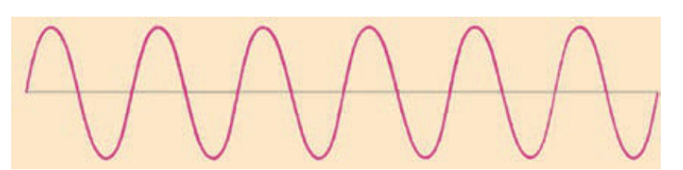
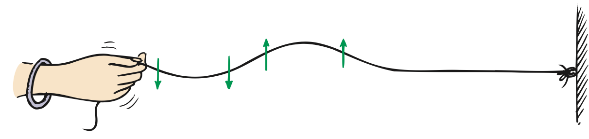

Good Vibrations
Chapter Opener
The Chapter 19 opener portrait of Frank Oppenheimer was omitted because no matching captured image was supplied.
The Exploratorium in San Francisco is not only a world-class museum of science and technology; it is also perhaps the best place on planet Earth to teach a physics class. I was honored to do so in the years 1982-2000. The Exploratorium is special because of its founder, Frank Oppenheimer, the younger brother of more famous J. Robert Oppenheimer, the director of the Los Alamos lab during World War II. Frank’s passion for doing physics was surpassed only by his passion for teaching it. I was enormously privileged to share my classroom with him when vibrations, waves, and musical sounds were the topic. I remember after one of his brilliant presentations he quietly asked me how he did. Almost tearfully, I responded, “You were great.” For it was true. In addition to his great explanations of physics, he himself exuded a personal greatness—with his insistence on excellence, lack of pretentiousness, and respect for invention and play and for his students. Frank was the most-loved teacher in my experience.
Frank Oppenheimer suffered in the political witch hunts of the 1950s when he admitted to being a member of the American Communist Party back in the depths of the Great Depression, along with many other idealistic citizens who were sensitive to the nation’s high unemployment rate at the time. Frank told me that after he refused to give the names of other members to the House Un-American Activities Committee, he was hounded by the FBI. Despite his impressive accomplishments in physics, and despite international awards in physics, Frank was barred from practicing physics. He was, however, allowed to be a cattle farmer and teach general science at Pagosa Springs High School in Colorado. Frank went on to say that, adding insult to injury, his neighbors were warned by government agents to keep a wary eye on his potential “un-American activities.”
Frank devoted the rest of his life to exposing the general public to the wonders of science, which culminated in the Exploratorium in San Francisco. I dedicated the 5th edition of my Conceptual Physics to him. Before Frank died in 1985, he contributed this paragraph, which I used as the book’s opening paragraph:
By trying to understand the natural world around us, we gain confidence in our ability to determine whom to trust and what to believe about other matters as well. Without this confidence, our decisions about social, political, and economic matters are inevitably based entirely on the most appealing lie that someone else dishes out to us. Our appreciation of the noticings and discoveries of both scientists and artists therefore serves, not only to delight us, but also to help us make more satisfactory and valid decisions and to find better solutions for our individual and societal problems.
Frank’s main motive for founding the Exploratorium was to lift people by encouraging them to do for themselves and to think for themselves—a way of teaching that is now widespread. In 2013 the Exploratorium moved from the Palace of Fine Arts in San Francisco to nearby Pier 15. I’m happy to report that the new and larger Exploratorium has all the charm and good energy that Frank gave to the original Exploratorium.
Good Vibrations
In a general sense, anything that moves back and forth, to and fro, side to side, in and out, or up and down is vibrating. A vibration is a periodic wiggle in time. A periodic wiggle in both space and time is a wave. A wave extends from one place to another. Light and sound are both vibrations that propagate through space as waves—but two very different kinds of waves. Sound is a mechanical wave, the propagation of vibrations through a material medium—a solid, liquid, or gas. If there is no material medium to vibrate, then no sound is possible. Sound cannot travel in a vacuum. But light can because, as we shall learn in later chapters, light is a vibration of electric and magnetic fields—an electromagnetic wave of pure energy. Although light can pass through many materials, it needs none. This is evident when it propagates through the vacuum between the Sun and Earth. The source of all waves—mechanical or electromagnetic—is something that is vibrating. We shall begin our study of vibrations and waves by considering the motion of a simple pendulum.
Vibration of a Pendulum
If we suspend a stone at the end of a piece of string, we have a simple pendulum. Likewise for a sand-filled container suspended at the end of a vertical pole that swings to and fro. In the chapter-opening photos, Frank Oppenheimer shows how sand leaking from such a pendulum traces a straight line on a stationary conveyor belt and then, when the belt moves at constant speed, produces a special curve known as a sine curve. A sine curve is a pictorial representation of a wave produced by simple harmonic motion.1
Pendulums swing to and fro with such regularity that, for a long time, they were used to control the motion of most clocks. They can still be found in grandfather clocks and cuckoo clocks. Galileo discovered that the time a pendulum takes to swing to and fro through small distances depends on only the length of the pendulum.2 The time of a to-and-fro swing, called the period, does not depend on either the mass of the pendulum or the size of the arc through which it swings.

A long pendulum has a longer period than a short pendulum; that is, it swings to and fro less frequently than a short pendulum. A grandfather clock’s pendulum with a length of about 1 meter, for example, swings with a leisurely period of 2 seconds, while the much shorter pendulum of a cuckoo clock swings with a period that is less than a second. In addition to length, the period of a pendulum depends on the acceleration due to gravity. Oil and mineral prospectors use very sensitive pendulums to detect slight differences in this acceleration, which is affected by the densities of underlying formations.
1 The condition for simple harmonic motion is that the restoring force is proportional to the displacement from equilibrium. This condition is met, at least approximately, for most vibrations. The component of weight that restores a displaced pendulum to its equilibrium position is directly proportional to the pendulum’s displacement (for small angles)—likewise for a bob attached to a spring. Recall, from Chapter 12, that Hooke’s law for a spring is F = kΔx, where the force to stretch (or compress) a spring is directly proportional to the distance stretched (or compressed).
2 The equation for the period of a simple pendulum for small arcs is T = 2π√(L/g), where T is the period, L is the length of the pendulum, and g is the acceleration due to gravity.
Wave Description
Wave Description
A sine curve can also be traced by a bob attached to a spring undergoing vertical simple harmonic motion (Figure 19.2). As mentioned, a sine curve is a pictorial representation of a wave. As for a water wave, the high points of a sine wave are called crests and the low points are called troughs. The straight dashed line in the figure represents the midpoint of the vibration, the equilibrium position. The term amplitude refers to the distance from the midpoint to the crest (or trough) of the wave. So the amplitude equals the maximum displacement from equilibrium.

The wavelength of a wave is the distance from the top of one crest to the top of the next crest. Or, equivalently, the wavelength is the distance between any successive identical parts of the wave. The wavelengths of waves at the beach are measured in meters, the wavelengths of ripples in a pond are measured in centimeters, and the wavelengths of light are measured in billionths of a meter (nanometers).
How frequently a vibration occurs is described by its frequency. The frequency of a vibrating pendulum, or of an object on a spring, is the number of to-and-fro vibrations it makes in a given time (usually 1 second). A complete to-and-fro oscillation is one vibration. If a vibration occurs in 1 second, the frequency is one vibration per second. If two vibrations occur in 1 second, the frequency is two vibrations per second.
The unit of frequency is called the hertz (Hz), after Heinrich Hertz, who demonstrated radio waves in 1886. One vibration per second is 1 hertz; two vibrations per second is 2 hertz; and so on. Higher frequencies are measured in kilohertz (kHz, thousands of hertz) and still higher frequencies in megahertz (MHz, millions of hertz) or gigahertz (GHz, billions of hertz). AM radio waves are measured in kilohertz, and FM radio waves are measured in megahertz; radar and microwave ovens operate at gigahertz frequencies. A station at 960 kHz on the AM radio dial, for example, broadcasts radio waves that have a frequency of 960,000 vibrations per second. A station at 101.7 MHz on the FM dial broadcasts radio waves with a frequency of 101,700,000 hertz. These radio-wave frequencies are the frequencies at which electrons are forced to vibrate in the antenna of a radio station’s transmitting tower. So we see that the source of all waves is something that vibrates. The frequency of the vibrating source and the frequency of the wave it produces are the same.

The period of a vibration or wave is the time for one complete vibration. If an object’s frequency is known, then its period can be calculated, and vice versa. Suppose, for example, that a pendulum makes two vibrations in 1 second. Its frequency is 2 Hz. The time needed to complete one vibration—that is, the period of vibration—is 1/2 second. Or, if the vibration frequency is 3 Hz, then the period is 1/3 second. Frequency (vibrations per second) and period (seconds per vibration) are reciprocals:
Frequency = 1 / period
or, vice versa,
Period = 1 / frequency
Wave Motion
Wave Motion
Most information about our surroundings arrives in some form of waves. It is through wave motion that sounds are transported to our ears, light to our eyes, and electromagnetic signals to our radios and wireless phones. Through wave motion, energy can be transferred from a source to a receiver without the transfer of matter between the two points.
Wave motion can be most easily understood by first considering the simple case of a horizontally stretched rope. If one end of such a rope is shaken up and down, a rhythmic disturbance travels along the rope. Each particle of the rope moves up and down, while, at the same time, the disturbance moves along the length of the rope. The medium, rope or whatever, returns to its initial condition after the disturbance has passed. What is propagated is the disturbance, the energy of wave motion, not the medium itself.
Perhaps a more familiar example of wave motion is a water wave. If a stone is dropped into a quiet pond, waves travel outward in expanding circles, the centers of which are at the source of the disturbance. In this case, we might think that water is being transported with the waves, since water is splashed onto previously dry ground when the waves meet the shore. We should realize, however, that, barring obstacles, the water will flow back into the pond and things will be much as they were in the beginning. The surface of the water will have been disturbed, but the water itself will have gone nowhere. A leaf on the surface will bob up and down, and drift to and fro, as the waves pass, but the leaf will end up where it started. Again, the medium returns to its initial condition after the disturbance has passed—even in the extreme case of a tsunami.
Figure 19.4 was omitted because no matching captured image was supplied.
Let us consider another example of a wave to illustrate that what is transported from one location to another is a disturbance in a medium, not the medium itself. If you view a field of tall grass from an elevated position on a gusty day, you will see waves travel across the grass. The individual stems of grass do not leave their places; instead, they swing to and fro. Furthermore, if you stand in a narrow footpath, the grass that blows over the edge of the path, brushing against your legs, is very much like the water that doused the shore in our earlier example. While wave motion continues, the tall grass swings back and forth, vibrating between definite limits but going nowhere. When the wave motion stops, the grass returns to its initial position.
Practicing Physics
Here we have a sine curve that represents a transverse wave. With a ruler, measure the wavelength and amplitude of the wave.

Wavelength __________
Amplitude __________
Transverse Waves
Fasten one end of a rope to a wall and hold the free end in your hand. If you suddenly shake the free end up and then down, a pulse will travel along the rope and back (Figure 19.5). In this case, the motion of the rope (up and down arrows) is at right angles to the direction of the wave speed. The right-angled, or sideways, motion is called transverse motion. Now shake the rope with a regular, continuing up-and-down motion, and the series of pulses will produce a wave. Because the motion of the medium (the rope, in this case) is transverse to the direction the wave travels, this type of wave is called a transverse wave.

Waves in the stretched strings of musical instruments are transverse. We will see later that electromagnetic waves, which make up radio waves and light, are also transverse.
Longitudinal Waves
Not all waves are transverse. Sometimes the parts that make up a medium move to and fro in the same direction in which the wave travels. Motion is along the direction of the wave rather than at right angles to it. This produces a longitudinal wave.
Both a transverse wave and a longitudinal wave can be demonstrated with a spring or a Slinky stretched out, as shown in Figure 19.6. A transverse wave is produced by shaking the end of a Slinky from side to side in a direction perpendicular to the Slinky. A longitudinal wave is created by rapidly pulling and pushing the end of the Slinky toward and away from you in a direction parallel to the Slinky. In this case, we see that the medium vibrates parallel to the direction of energy transfer. Part of the Slinky is compressed, and a wave of compression travels along the spring. In between successive compressions is a stretched region, called a rarefaction. Both compressions and rarefactions travel in the same direction along the Slinky. Sound waves are longitudinal waves.

Waves that have been generated by earthquakes and that travel in the ground are of two main types: longitudinal P waves and transverse S waves. (Geology students often remember P waves as faster “push–pull” waves, and S waves as slower “side-to-side” waves.) S waves cannot travel through liquid matter, but P waves can travel through both molten and solid parts of Earth’s interior. Study of these waves reveals much about Earth’s interior.

The wavelength of a longitudinal wave is the distance between successive compressions or, equivalently, the distance between successive rarefactions. The most common example of longitudinal waves is sound in air. Elements of air vibrate to and fro about some equilibrium position as the waves move by. We will treat sound waves in detail in Chapter 20.
Wave Speed
Wave Speed
The speed of periodic wave motion is related to the frequency and wavelength of the waves. We can understand this by considering a top view of the simple case of water waves (Figure 19.8). Imagine that we fix our eyes on a stationary point on the surface of water and observe the waves passing by this point. We can measure how much time passes between the arrival of one crest and the arrival of the next one (the period) and also observe the distance between crests (the wavelength). We know that speed is defined as distance divided by time. In this case, the distance is one wavelength and the time is one period, so wave speed = wavelength/period.

For example, if the wavelength is 1.5 m and the time between crests at a point on the surface is 0.5 s, then the wave moves 1.5 m in 0.5 s and its speed is 1.5 m divided by 0.5 s, or 3 m/s.
Since period is the inverse of frequency, the formula wave speed = wavelength/period can also be written as
Wave speed = frequency × wavelength
This relationship holds true for all kinds of waves, whether they are water waves, sound waves, or light waves.

Textbook Sections: 19.1–19.4
Learning Target: Students will describe vibrations and waves using amplitude, wavelength, frequency, period, and wave speed.
- I can explain that a vibration is a repeated back-and-forth motion.
- I can describe a wave as a disturbance that transfers energy.
- I can identify amplitude, wavelength, frequency, period, crest, trough, compression, and rarefaction.
- I can distinguish transverse waves from longitudinal waves.
- I can use wave speed relationships to connect frequency, wavelength, and speed.